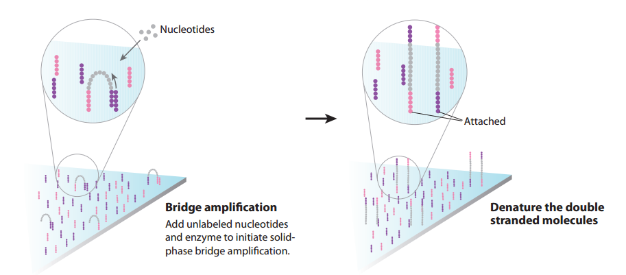

Chapter 3: How Do We Assemble Genomes?
(Coursera Week 1)
In 1998, Shankar Balasubramanian and David Klenerman from Cambridge University's Chemistry Department developed a novel DNA sequencing method. Their approach would soon become the most popular sequencing technology in the world.
The main idea of their method is simple; during DNA replication, we can add nucleotides with different fluorescent labels, detect the light emitted, and determine which nucleotide was attached.
This workflow is described as follows. (Figures in this FAQ are taken from an excellent primer on sequencing technologies, Mardis 2008. You may wish to consult her paper for additional details.)
- The DNA is chopped up into smaller fragments that are modified by adding adapters to each end (figure below, left) - short, synthetic fragments of DNA.
- One end of each modified DNA fragment is anchored on the surface of a chip called a flow cell (figure below, right). The flow cell is covered by primers, which are short sequences that are complementary to the adapters.
- The instrument cannot detect signal from a single molecule, so we need to obtain multiple copies of each DNA fragment, located in a particular place on the flow cell surface. The free ends of adapters that have been anchored will bend and hybridize to nearby complementary primers. If we just add nucleotides and DNA polymerase, DNA replication will begin, extending from the primer around the arch to the adapter on the opposite end of the modified DNA fragment. The arching double strands of DNA look like bridges, so this process is called bridge amplification (figure below, left).
- In a denaturation step, we cleave the two strands of DNA joined in each bridge. As a result, we have twice the amount of single-stranded DNA that we began with (see figure below, right).
 - After the first round of bridge amplification we have two copies of the molecule, attached nearby. We then repeat this process several times; after each round, the number of copies doubles, resulting in a large number of identical DNA fragments located near each other and forming clusters. This process occurs across the whole flow cell, and so we obtain a large number of these clusters on the cell surface, as shown below.
- We can then cut one end of the bridges using a restriction enzyme, and all the reverse strands will be washed off the flow cell, leaving only forward strands attached. This process occurs across the whole flow cell.
- Then we start sequencing itself. Primers are added, and fluorescently tagged nucleotides called reversible terminators are added to the cell to base pair with single strands. Each of the four bases emits its own color when a laser is fired at the DNA, so we take a photo of the flow cell, which tells us which nucleotide is being incorporated at each spot in each cycle. Following the incorporation step, an enzyme cleaves off the fluorescent dye, unused nucleotides and DNA polymerase molecules are washed away, and nucleotides are added in order to base pair with the next nucleotide down on each strand and begin the imaging process again. You can see an animation of this process at the following video.
- With each cycle of sequencing, there is signal decay and molecules in the cluster that fall behind or jump ahead in the synthesis process, leading to higher noise. This explains why we cannot read long DNA fragments.
For a video illustrating this process, please watch the following video produced by Illumina.
Yes, but the resulting overlap graph may potentially have more edges. In practice, edges in an overlap graph are formed by pairs of reads that overlap significantly but not perfectly (in order to account for errors in the reads).
No. In practice, we won't actually glue the nodes; instead, we will simply create a node for each distinct prefix and suffix that appear in our k-mers.
(Coursera Week 2)
Check out pages 39-41 of Graphs, Networks, and Algorithms, by Dieter Jungnickel.
In Fig. 3.39 (bottom), reproduced below, we remove only small bubbles to leave the colored path. Removing large bubbles is dangerous because it may lead to removal of paths representing fragments of a genome rather than erroneous reads.
A single error in a read results in a bubble of length k in a de Bruijn graph constructed from k-mers. Multiple errors in various reads may form longer bubbles, but since the error rate in reads is rather small (less than 1% per nucleotide in Illumina reads), most bubbles are small.
Consider the adjacency list of a small graph with ten nodes and twelve edges shown below.
0 → 3 1 → 0 2 → 1, 6 3 → 2 4 → 2 5 → 4 6 → 5, 8 7 → 9 8 → 7 9 → 6
Start at any node (say, node 0) and walk aimlessly in the graph by taking the first unused edge at each node you encounter until there are no more unused edges. For example:
0 → 3 → 2 → 1 → 0
Since we haven't traversed all of the edges yet, there exists at least one node in this cycle with still unused edges; in this case, that node is node 2. We therefore rearrange the cycle so that it starts and ends at node 2 instead of node 0:
2 → 1 → 0 → 3 → 2
After traversing this cycle, start walking again, taking the first untraversed edge at each node until there are no more untraversed edges available.
2 → 1 → 0 → 3 → 2 → 6 → 5 → 4 → 2
Since we haven't traversed all of the edges yet, there exists a node in the constructed cycle (node 6) with still untraversed edges. We rewrite the cycle so that it starts and ends at node 6 instead of node 2:
6 → 5 → 4 → 2 → 1 → 0 → 3 → 2 → 6
After traversing this cycle, start walking again, taking the first untraversed edge at each node until there are no more untraversed edges available.
6 → 5 → 4 → 2 → 1 → 0 → 3 → 2 → 6 → 8 → 7 → 9 → 6
Since all of the edges in our graph have been used, we have constructed an Eulerian cycle.
In reality, the situation is more complicated. Some parts of a genome may not be covered by any reads at all, resulting in de Bruijn graphs with unbalanced nodes. Also, while bacterial genomes typically consist of a single circular chromosome, eukaryotic genomes typically have multiple linear chromosomes. Even in the case of perfect coverage by reads, ends of linear chromosomes result in unbalanced nodes. Existing assembly tools successfully address this applications by finding contigs in de Bruijn graphs, which they then combine into scaffolds using paired reads.
Biologists sometimes perform additional experiments that allow them to stitch together contigs and to identify which Eulerian path corresponds to the genome. For example, the companies 10X Genomics, Dovetail Genomics, and Phase Genomics generate various types of additional data to assist the assembly. However, since these additional experiments remain time-consuming, most genomes are stored in databases as contigs.
No.
Researchers could compare assemblies for a variety of values of k, and then attempt to identify the highest-quality assembly. However, this process is very time-consuming. Moreover, there is no "optimal" value of k, as different regions of the genome may have differing best choices of k. To address this conundrum, many modern assemblers use an iterative de Bruijn graph approach that integrates de Bruijn graphs for various values of k into a single graph. See Peng et al., 2010 for details.
Biologists have a lot of freedom in selecting the gap size d in order to optimize genome assembly quality. For example, in many sequencing projects with Illumina reads, the read length is about 300 nucleotides and the gap length is about 200 nucleotides. However, it is becoming more and more common to generate read-pairs with large gap sizes (e.g., 8,000 nucleotides) because, as explained in the main text, large gap sizes often result in better assemblies.
In practice, the distance between read-pairs is known only approximately. Although it may seem that the paired de Bruijn graph would become impractical in the case of imprecise distances between reads, recent studies beyond the scope of this book have demonstrated how to adapt de Bruijn graphs in order to analyze inexact read-pair distances.
Assuming that the distance between reads in a read-pair is fixed, say that we want to break them into shorter read-pairs separated by the same fixed distance. The example below illustrates breaking a (5, 2)-mer into three (3, 5)-mers:
ACGTA---GCCTT ACG-----GCC CGT-----CCT GTA-----CTT
In general, any (k, d)-mer can be broken into t+1 (k-1, d+t)-mers.
Some Eulerian paths in the de Bruijn graph constructed from k-mers after read breaking will be incompatible with the original reads. Real assemblers store information about the read that each k-mer comes from after read breaking. This additional information limits analysis to Eulerian paths in de Bruijn graphs that are compatible with reads.
After obtaining traditional reads, we can add specific primers to the outer end of our DNA fragments, and they will attach to the primers on the cell surface, forming a bridge again. Using a different restriction enzyme, we can cut another end of the “bridges”, releasing the “inner” end, causing the DNA fragment to flip over. (See figure below; source: Cristian Cosentino)

We then repeat the sequencing procedure, resulting in reverse reads. As a result, we get a pair of reads – forward and reverse – which comes from the ends of the same DNA fragments, separated by gap of approximately known length, and oriented towards each other. Thus, we have a read pair.
The total length of a read pair (computed as the sum of lengths of both reads plus the length of the gap) is referred to as the insert size (for many applications, the insert size is equal to 500). It is very hard to sequence longer fragments – they start to wobble, complicating cluster generation and detection. Biologists have devoted a great deal of research into new approaches to overcome this problem.
The larger the insert size, the greater the length of repeats that can be potentially resolved during assembly. However, the typical insert size for standard paired-end libraries is only 500 nucleotides, which is too small to resolve long repeats in bacterial, let alone eukaryotic, genomes. For example, ribosomal RNA clusters in bacteria are often longer than 6000 nucleotides and are typically repeated in the genome several times.
To resolve longer repeats, biologists often use another sample preparation technology referred to as mate-pair generation. Mate-pair sample preparation, which is illustrated in part b) of the figure below, differs from paired-end sample preparation, which is illustrated in part a) of the figure below, with respect to how the sequence library is made. (Figure adapted from Mardis 2008.)
Figure: a) Paired end sequencing. b) Mate pair sequencing. "SP" denotes "sequencing primer" (sequence initiation); "A" denotes "adapter" sequence (attaching DNA to surface).
DNA is fragmented into large segments; for example, the insert size is often 7 kbp (compared with the 500 bp in paired-end libraries). Afterwards, complementary adapters, containing a specific marker called biotin, are connected to the ends of the long DNA fragments. These adapters are then connected to each other, resulting in circular DNA molecules. The circularized fragments are then subjected to a second round of fragmentation (to 300-500bp), and only biotin-containing fragments are selected. These fragments, representing two ends of the same molecule, connected by an adapter, are then used in a standard paired-end sequencing procedure. In a sense, the middle segment of the DNA has been discarded along the way (see figure below), and the ends are sequenced as in standard paired-end sequencing. As a result, we obtain a pair of reads from the ends of the long DNA fragment, oriented away from each other.

Many sequencing projects generate several libraries of paired reads with different insert sizes – e.g. 500, 3000, and 7000 nucleotides. The advantage of using multiple libraries is that libraries with small insert sizes are better suited for resolving short repeats, whereas libraries with larger insert sizes are better suited for resolving long repeats.
The figure in the text shows a bubble caused by an error in a read CGTACGGACA from the region ATGCCGTATGGACAACGACT.
However, the same bubble would appear in the de Bruijn graph if the region ATGCCGTATGGACAACGACT were repeated twice in the genome with a single mutation:ATGCCGTATGGACAACGACT CGTACGGACA
We distinguish these types of bubbles by calling the former an error bubble and the latter a repeat bubble.
Fortunately, because the error rate is small, there are typically only a few reads corresponding to an error bubble, but many more reads corresponding to a repeat bubble. As a result, biologists classify bubbles with low coverage as error bubbles. Unfortunately, the predictive power of this simple test decreases in sequencing projects for which coverage of some regions may be low, such as in single-cell sequencing projects, in which the coverage greatly fluctuates along the length of the genome.
ISBN: 978-0-9903746-3-3